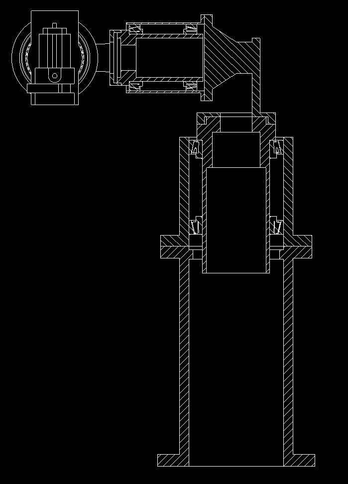
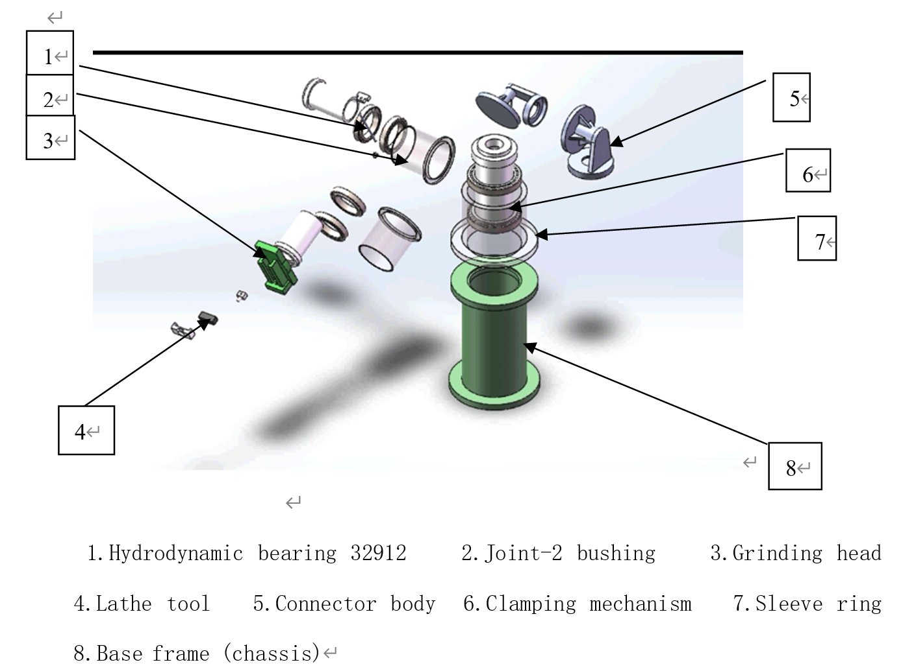
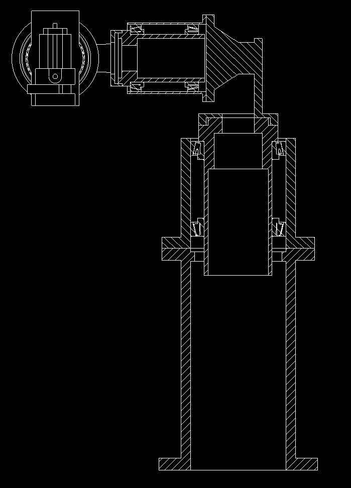
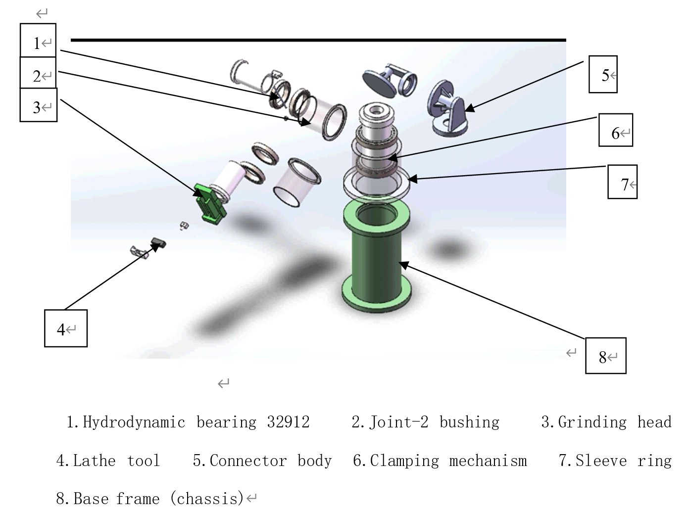

← Back to Projects
Intelligent Lathe Tool Grinder — Mechanical Structure Design
2022 · Mechanism design · Mechatronics feasibility
SolidWorks
Mechanism Layout
Grinding Kinematics
Stiffness & Vibrations
Safety Brake
Serviceability
Gallery
 



Overview
- Concept for an automated grinder to re-sharpen lathe tools with consistent geometry and repeatable angles.
- Emphasis on mechanical structure: compact footprint, high stiffness paths, protected drives, and easy maintenance.
- Designed for three-axis tool orientation (independent axes), plus XY feed and Z lift for wheel approach.
- Focus areas: vibration control near the wheel, thermal growth paths, chip/dust management, and quick fixturing.
Mechanical Architecture
- Tool head (3-DOF): decoupled rotations about X/Y/Z so the cutting faces can be aligned to the grinding plane without axis coupling.
- Workstage: precision XY linear guides for feed; Z column lift for wheel height set.
- Wheel module: cup/flat wheel options; guard, nozzle for coolant/air, and balance provision.
- Base & frame: cast or welded base with closed stiffness loops; motor mounts isolated from wheel vibration path.
Design Notes
- Stiffness & mass: short load paths from wheel → spindle → column → base; ribbed plates where needed.
- Bearings & off-loading: hollow-shaft sleeves/paired bearings to off-load cantilever moments from small motors.
- Leadscrews vs. rack: fine manual trim via leadscrew (self-lock), optional servo on XY for programmable passes.
- Serviceability: front service windows, removable guards, labeled harnesses, and dust management covers.
Safety & Controls (Concept)
- Fail-safe brake: power-off brake on orientation axes to hold pose during outages.
- Interlocks: door/guard interlocks; wheel overspeed limit by VFD; E-stop chain.
- Wheel selection: Al2O3 for HSS; SiC/diamond for carbide; guards sized to wheel burst specs.
- Future mechatronics: stepper/servo drives with PLC or MCU for angle presets and feed sequences.